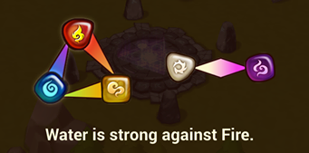
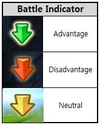
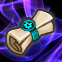
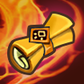
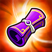
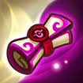

About the game
What is summoner's war? Summoner's war is a game created by com2us. The point of the game is to collect as many rare monsters and runes as you can and battle other players in RTA(Real Time Arena). Most of the game is about farming and luck in your summons, but the most important thing is how much money you put into the game to buy scrolls or good runes. Com2us favors those who has spent money on the game and will give that account better luck. As you go on later into the game and have finished all the stories, all thats left that the game can offer is basically more and more farming.
Monsters and summoning
 In this game, there are 5 different attributes for monsters. There is fire, water, wind, light, and dark. As shown on the image, water is weak to wind but is strong against fire. Wind is strong against water but is weak against fire. Fire is weak to water but is strong against wind. Light is weak and strong against dark and dark is weak and strong against light. There are a total of 5 different types of monsters. There are HP monsters, defense monsters, attack monsters, support monsters, and material monsters. The HP type monster is the tanks in this game. They originally have a higher base HP that monsters that are not an HP type monster. A tank type monster is good in guild raids, arena, and the scenario. In the game, when you are battling monsters from the scenario or arena defenses, the computer makes the monsters target the monsters they have a attribute advantage over, so if a team was filled with water types, it would be smart to bring a few attackers and then one fire tank to absorb all the damage. During a battle, there will be arrows on top of enemy monsters. If the arrow on it is green, it means you have an attribute advantage over that monster. A silver arrow means that you do not have an advantage or a disadvantage. A red arrow means that you are at an attribute disadvantage. Monsters all have stars. Stars will determine how rare and how good the monster is. A monster can gain more stars when it is at max level. Then if the monster was a 2 star, feeding 2 2 star monsters would get it to 3 star level 1. If the monster was a 3 star, you would have to feed 3 3 star monsters to get it to 4 star level 1. This pattern repeats until you reach 6 stars. Then that is the max. Upgrading the number of stars a monster has will increase its base stats and have a higher max level. Usually the good monsters are natural 4 or 5 stars(natural means the monster was a 4 or 5 star when it was summoned and not through upgrading). When summoning, there are many types of scrolls. Down below is a chart showing all the scrolls and what they summon.
| Images | scroll | summons | monsters |
|---|---|---|---|
|  | Unknown scroll | 1-3 stars | water, fire, and wind |
|  | Mystical scroll | 3-5 stars | water, fire, and wind |
|  | Legendary scroll | 4-5 stars | water, fire, wind |
|  | Light and Dark scroll | 3-5 stars | light and dark |
 |
Water scroll | 3-5 stars | only water |
 |
Fire scroll | 3-5 stars | only fire |
 |
Wind scroll | 3-5 stars | only wind |